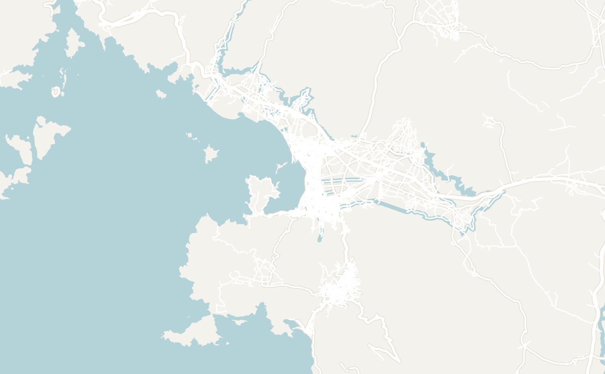
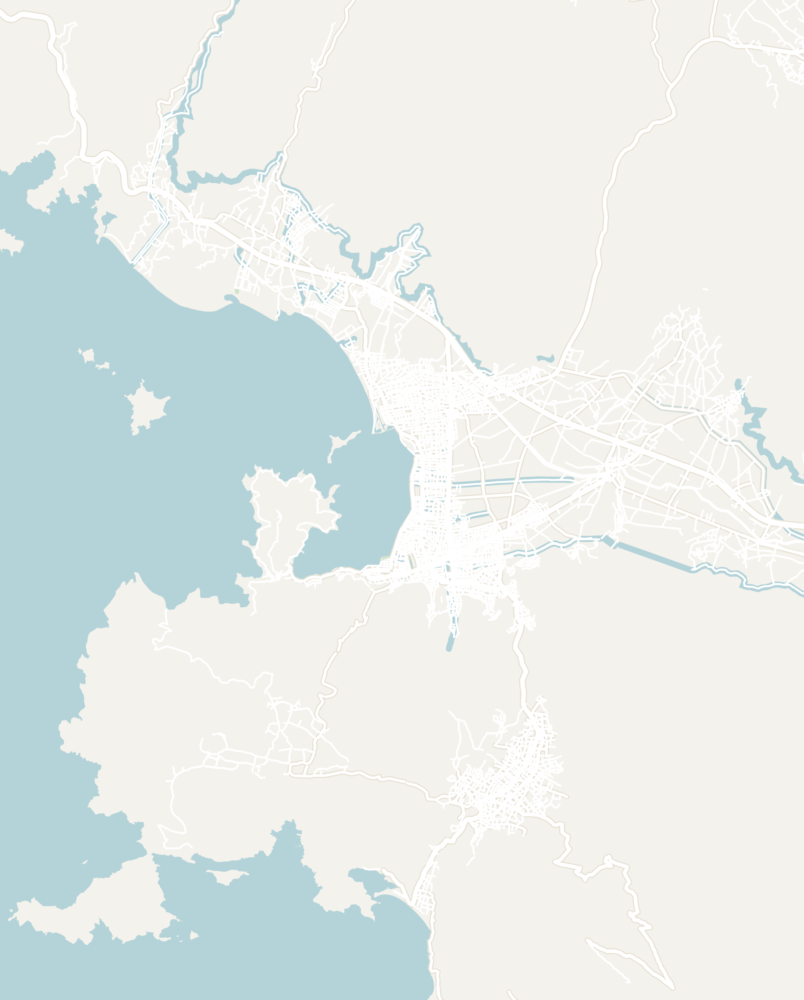
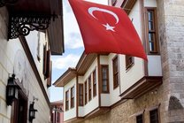

The best place to visit on the Turkish Riviera is the stretch around Fethiye and Ölüdeniz. The coast is home to the famous Blue Lagoon and one of the most stunning beaches in the world lined with white sand that runs up to bright turquoise water. The two towns also pack a wide range of activities beyond the beach including hikes along the ancient 335-mile Lycian Way, some of the best paragliding in the world, and an abandoned ghost town hidden in the hills.
The Turkish Riviera is a great destination for everyone, from backpackers to families. It is easy to navigate, affordable and full of tourism infrastructure. The best way to visit the region is to fly into Antalya (read my guide here) or Bodrum, the two major cities at the east and west ends of the Riviera. You can then make your way by bus, car or even sail (read about the sailing experience here) between the many smaller towns along the way. If you're short on time, the stretch between Fethiye and Ölüdeniz was my favorite, so you can just fly directly here through Dalaman Airport.


Double-tap to open in Google Maps
Easily reached by plane, sailboat or even a ferry from Greece, Fethiye and Ölüdeniz were among my favorite stops on the Turkish Riviera. Despite sitting just 20 minutes apart, the two towns have completely different things to offer. Fethiye is a modern, mid-size port city where a lot of Turks come to retire, while Ölüdeniz is a small, touristy resort town full of hotels and holiday apartments. The best way to see this corner of the coast is to base yourself in Ölüdeniz and treat Fethiye as a day trip. I would recommend 3 to 5 days, plus a few extra if you're an avid hiker who wants to see more of the Lycian Way.
Getting to Fethiye and Ölüdeniz

Fethiye is the transport hub for this end of the coast, and nearly every route in ends there. The season runs from late April to late October, but the best time to visit is June to September is when the sea is warm enough to swim every day. Here are the main ways to get there:
- Flights — There are many well-connected airports to choose from on the Turkish Riviera, but Dalaman Airport (DLM) is the closest to this region. It is huge, new and a bit of a trek from both towns. A transfer from Fethiye costs 50 euros, which felt a bit steep that took 30 minutes.
- Antalya (AYT) and Milas-Bodrum (BJV) airports are both about 3 hours away by road if you want to plan a longer trip or the fares work out better
- By Sailboat — the best way to get anywhere is usually by sailboat! The Blue Cruise is a 4-day sailboat excursion. It starts in the small town of Olympos, just outside of Antalya, and ends in Fethiye's harbor, which is how I arrived. You can also start the Blue Cruise from Fethiye and sail in the opposite direction. Read my detailed article for more.
- Bus — buses in Türkiye are comfortable, cheap and easy to book, so this is the way to arrive from the rest of the coast. From Antalya it is 3 to 4 hours to the Fethiye bus station, and from Kaş about 2 hours along the coast road, so it is easy to combine the two. Tickets run about 500 to 700 lira (roughly $15), and you can book ahead on the Obilet app, the same one I recommend in my Antalya guide
- Ferry from Rhodes — ferries run between the island of Rhodes in Greece and the Fethiye ferry port in about 1.5 hours, with more sailings in summer. A one-way ticket is about 55 euros, and you can book ahead through Tilos Travel. It is an easy way to tack Türkiye onto a trip to the Greek islands
Getting around
Once you're here, getting around is as easy as anywhere I've been outside of Europe. The Turkish government has put a lot of money into tourism infrastructure along this coast, and it shows.
- Dolmuş — the dolmuş (a shared minibus) is quite possibly the most convenient form of transpot I've seen anywhere. You'll see a blue sign on basically every block in Fethiye and Ölüdeniz where the dolmuş will stop. Hailing one is as easy as walking to the curb and waving at the driver when it goes by. The best part is that it is completely free
- Frequency — It runs every 10 minutes between Fethiye and Ölüdeniz. The same dolmuş network goes further to Hisarönü, Ovacık, Kayaköy and Butterfly Valley, with the further stops running closer to every 30 minutes
- Taxis — taxis are also easy to find, but they are priced for tourists and add up quickly. I stayed far out of Fethiye's city center and paid for it in taxis so keep that in mind when booking a place
- Bikes and scooters — the waterfront promenade in Fethiye is lined with bikes and electric scooters for rent. I used the Beam app to rent an electric scooter. It is the perfect way to get along the water and cruise around
Paragliding Over the Blue Lagoon

I've probably am repeating myself when I say that paragliding over the bright blue waters of Ölüdeniz was one of the most incredible things I've done in Türkiye. If there's one activity you need to do before you leave Türkiye, this is it.
The journey starts with a van ride up the switchbacks to the top of Babadağ, the mountain overlooking Ölüdeniz. When you're at the top, you're so high that you can feel the strong mountain winds blowing. The launch point is a wide slab of sloped concrete that simply drops off the edge, full of other nervous paragliders.
A large Turkish man, who had just chain-smoked a whole carton of cigarettes, turned and introduced himself as Osman. He was my pilot for the day and gave me a VERY brief set of instructions before we headed off. You get strapped into a harness that is basically a chair, clipped onto your pilot, and then you both run down the slope until the ground disappears and you sit back. Then the wing catches the air and you're on your way!

The flight was a surprisingly peaceful experience. You get to enjoy the view the whole way down: massive mountains on one side, the little town hidden directly below you, and the bright turquoise water of the Blue Lagoon laid out in front of you. You drift down over the town and land right on the main beach, and all you have to do is stand up. I was buzzing for hours!
The entire flight is about last 30 minutes and expect to pay $100 to $150, which comes with a lot of photos. I've been skydiving and bungee jumping, and I enjoyed this experience way more. I went on day 3 of the blue cruise, and it is the one add-on I would tell anyone on that trip to book.
Ölüdeniz and the Blue Lagoon


Having seen the gorgeous Blue Lagoon overhead while paragliding, I had to return and explore it up close and personal. The Blue Lagoon is the reason most people come to Ölüdeniz, and it earns the reputation as one of the most photographed beaches in the world. A sandbar runs out from the shore with the open Mediterranean on one side, a bright fluorescent blue, and a still lagoon on the other that shifts through different shades of blue as the day goes on. It is one of the best beaches I've ever seen. Rent a chair at one of the beach clubs, or snorkel the lagoon, which is full of fish.

To be honest, I liked the town around it less. The waterfront is full of vendors selling fake luxury brands or bars aimed at British package holidays. There is also a huge row of enormous pirate ship boats parked along the shore. Don't let this discourage you from visiting! The Blue Lagoon and Paragliding is absolutely worth the trip and I even found some amazing restaurants while I was there.
Montana Seyir Tepesi — The Best Viewpoint in Ölüdeniz


The best view of the lagoon is from above: the entire sandbar, water on both sides and the whole town spread out underneath you, and it is worth every step of the climb. If you're up for a short 40 minute hike, climb up to Montana Seyir Tepesi. It is also called the Hotel Montana viewpoint since the trail starts by the famous hotel.
If you're starting from the main town, head to the bus stop by the beach where you can take the dolmuş uphill to the top of town first which takes about 10 minutes. Next, walk to the Montana Pine Resort and follow the trail from there. The Lycian Way starts from the same road under a big yellow arch covered in stickers reading Likya Yolu, so you'll see many hikers with their massive bags following the same trail.

The official viewpoint has a massive orange frame that perfectly frames the Blue Lagoon below. However, you can stop wherever you like and the views keep getting better the higher you go. The hike goes so high up that you'll see the paragliders drifting down over the water the whole way up.
The Lycian Way, Kayaköy and Butterfly Valley
The Lycian Way is an ancient trail named after the Lycian civilization that lived along this coast more than 2,000 years ago. The full route runs 520 to 540 km (about 320 to 335 miles) and takes 25 to 35 days end to end. It is the most famous long trail in Türkiye, and its official start is Hisarönü, the resort village right next to Ölüdeniz. For background, the Lycians existed during the same time as the ancient Greek city-states and had a language and alphabet of their own. They ran a civilization consisting of a league of city-states that the Greeks admired and that Rome eventually absorbed as a province.
Don't worry, you don't have to commit to the whole thing! The stretch between Fethiye and Butterfly Valley fits nicely into 3 days and it is a great way to get a taste of the trail. It is considered one of the most beautiful segments of the trail with stops at the aforementioned Blue Lagoon and abandoned town of Kayaköy. The trail is very manageable for beginner or moderate hikers in 3 days. Bring boots, plenty of water, snacks and keep a close eye on your AllTrails app: the terrain is manageable, but the signage isn't.
Day 1 of the journey starts in Fethiye's old town. To explain how manageable this hike is, I decided to do it a day earlier and my first stop was at the local grocery store to pick up water and snacks. I was also feeling hungry so I made a stop for börek for breakfast at Beyoğlu Börekçisi, a tiny bakery run by an older couple. From there, it is a short walk up to the rock tombs of the Ancient City of Telmessos (more on that later). The tombs sit right by the start of the trail, so I'd stop there first before leaving Fethiye.


The Fethiye to Kayaköy section of the trail runs about 8.5 miles. A carved stone marker sitting under a fig tree marks the start of the trail, and the first part is mostly road. The trail then turns into a dirt path through the pine forest and then switches to an old historic stone path. Walking along the cobblestone section of the trail made it feel like I was walking following the ancient Lycian path where people walked the same trails thousands of years ago. The surroundings were filled with pine and olive trees everywhere and only added to the ancient Mediterranean vibe.


With the constantly switching paths and very few signs or trail markers, I relied heavily on AllTrails for most of the day. There weren't many hikers on this segment, since the official Lycian Way only starts at the trailhead above Ölüdeniz. For the first few hours, I only passed 1 couple, and it wasn't until the second half of the day where I started seeing other hikers. Just before Kayaköy, the trail cuts through a small village, and the road from there takes you straight into town.
It started pouring the moment I arrived, so I waited out the thunderstorm at a local cafe called Kuyubaşı Köy Kahvesi. It turned out to be a nice surprise: a huge outdoor cafe where a lot of locals hang out and drink çay (a small glass of Turkish tea) all day. There are a few small guesthouses in the village if you want to spend the night.


Spend the morning exploring the ruins of Kayaköy, which has its own section below with more detail. The abandoned village covers an entire hillside, and I was there in the fog with almost nobody around. Until 1923, this Greek Orthodox town, called Levissi, was home to several thousand people, most of them Greek-speaking Christians who had lived alongside the Muslim Turks of the valley for centuries. After the Greco-Turkish War, the two countries signed a treaty that made the exchange compulsory: Orthodox Christians in Türkiye were sent to Greece and Muslims in Greece to Türkiye, about 1.6 million people in all, and Levissi was emptied within a year (more on Kayaköy below).

The population exchange emptied the town of Levissi within months, and it lies empty to this day. Today, you can wander around freely through the ruins of the town. Walking the streets in the fog, with a fireplace still standing in every roofless house, was one of the most fascinating and haunting things I did in Türkiye. The site is far bigger than it looks at first with a seas of buildings scattered across the hillside. Give it at least an hour and a half before you head on: the trail to Ölüdeniz climbs out of the village above the ruins.


The Kayaköy to Ölüdeniz section is about 6 miles (10 kilometers). Follow the trail or your maps closely. I made the mistake of taking a shortcut up through the pine forest above the village and I lost the path for almost an hour. Once I found the route again, I stuck to the small painted markers on the rocks which were often hard to spot.
After that, it is pretty straightforward. The trail heads downhill through the forest for a couple of hours. Then the trees open up and the Blue Lagoon appears below you. Even when I arrived in a light rain, it looked pretty impressive.

The second day is relatively short so you'll arrive in the town of Ölüdeniz with energy to spare. Wander around the town or head out for a swim. I highly recommend making a stop for dinner at Gözlemeci Sema, my favorite meal in town.
The last day starts the same way as the walk up to the Montana Seyir Tepesi Viewpoint: take the dolmuş uphill to the top of town. You can then follow the road to the big yellow Likya Yolu arch which actually marks the official start to the Lycian way. It is covered in stickers from all over the world and a favorite photo spot for trekkers.
The trail takes you up the side of the Babadağ mountain and you'll be treated to incredible views of the bright blue lagoon and the beach right below, and the paragliders drifting down over the water. The views kept getting better the higher I went. I took a million pictures and even snuck off the main path to find a better angle. I highly suggest setting off in the morning for the best visibility.


The Ovacık to Faralya section is about 7.9 miles (12.7 kilometers) and took me about 6 hours. After passing the Montana Seyir Tepesi Viewpoint, the path levels out through pine forest and old stone goat terraces. You'll have a view of the sea far below for the whole hike.
There is a stop in a small town called Kozağaç, which is the only place to buy water. The trail finally drops into Faralya, which is barely a village: one road, a mosque, a shop and a handful of family pensions strung along the cliff edge about 300 meters above Butterfly Valley. Find a place to spend the night here. Your host family at your accommodation will likely prepare a meal for you since there is nowhere else to eat. Make sure to catch the view at sunset here.
There are two main ways back to Ölüdeniz. The first option is to take a steep path from Faralya down into Butterfly Valley. The path is a bit sketchy with ropes to help you climb down the rocks and is even sometimes closed. Once you've descended through Butterfly valley, take a water taxi from the beach to Ölüdeniz. During the summer, the water taxi runs a few times a day and lasts about half an hour on the water. The easier way (less scenic) option is taking the dolmuş from Faralya, which runs about every half hour in season to Ölüdeniz and on to Fethiye in about an hour.
Kayaköy: The Abandoned City


You don't need to hike the Lycian Way to visit the abandoned Greek village of Kayaköy. In fact, many people visit it independently or via tour. From Ölüdeniz, take the dolmuş up to Hisarönü and change for the Kayaköy minibus. The entire bus journey is about 25 minutes and only a few lira each way, and the last one back leaves around sunset. Entry to the site is €3, paid in lira at the gate.
The entire village is spread across a hillside, and the site is enormous: it takes about 30 minutes just to walk across and is worth exploring for 1 to 2 hours. The houses are roofless shells, but you can still see the fireplace in every one and imagined where families once lived. You'll also be able to explore a couple of churches and a castle above it all. There was almost no one else when I was there adding to the eerie energy of the abandoned village.

For the history nerds: Kayaköy was a Greek Christian village until the 1923 population exchange, when about 1.6 million people were moved between Greece and Türkiye based purely on their religion. The Christians went to Greece and the Muslims to Türkiye. The every single one of the town's residents were sent to Greece, and the Muslims who arrived from Greece in the exchange refused to settle it, partly out of fear of the ghosts of the Greeks who had died there. The 1957 earthquake brought down much of what was still standing. Around 500 roofless houses still stand on the hillside, and the village inspired Eskibahçe in Louis de Bernières' novel Birds Without Wings.
Fethiye — The City Itself
To be blunt, Fethiye is skippable. However, you'll likely be crossing through if you're going on a boat trip or flying into the nearby Dalaman Airport. Fethiye is a modern city meant to be a retirement town for many retirees from Istanbul or Europe. If you have a couple days here, here's how to spend your time:


Double-tap to open in Google Maps
Ancient City of Telmessos


The Ancient City of Telmessos is the best thing to do in Fethiye. It is a small complex on the hillside above the old town, where a temple facade has been carved by hand straight into the cliff, with a small room behind the entrance and several smaller Lycian tombs cut into the rock around it. The biggest is the Tomb of Amyntas, and it is a reminder that modern Fethiye was built right on top of an ancient city. There is almost no signage and it only takes 15 minutes or so, but the view back over the city and the bay is really good, and there were hardly any other tourists when I went. Entry is about €3, paid in lira at the entrance. It is also right by the start of the Lycian Way to Kayaköy, so it makes a great first stop if you're hiking.

The Fethiye Promenade


The promenade is the nicest place in town to spend an evening. It runs for more than 3 miles along the water from the center toward Çalış Beach, with a bike path the whole way and bikes and electric scooters for rent. I took a scooter back along it after dinner twice, and it was one of my favorite parts of Fethiye.
On my last evening, I walked the whole thing. It passes a huge park filled with strange statues and a giant playground, then a long stretch of restaurants right on the water. Locals come out to fish off the rocks, and around sunset people line the seawall to watch the sun go down behind the boats in the bay. It was a bit cloudy that night, but the sunset still turned out pretty nice.
If you only have a few hours in Fethiye, this is how I'd spend the evening: walk the promenade at sunset, eat at one of the waterfront restaurants and scooter back along the water after dark.

Old Town Fethiye


The old town is small and packed with restaurants, bars and shops, and it gets pretty lively on weekend nights. In the morning it is much quieter: I walked through as the covered market was opening, past buckets of spices, strings of dried peppers and racks of hats and clothes, with a minaret poking up at the end of the lane. The big draw for a lot of visitors is the fish market, where you pick your fish at the counter and one of the restaurants around it cooks it for you. I didn't eat there, but it is the classic thing to do in town.
To be honest, the old town isn't worth a special trip if you've already been to Istanbul or even Kaleiçi in Antalya. Both are far bigger and older, while Fethiye's is just a few blocks: an earthquake in 1957 damaged about 90% of the city's buildings, which is a big part of why the whole place feels so new. It is worth an hour on your way up to Telmessos, but I wouldn't come to Fethiye for it.
The Beach

Fethiye's main beach is Çalış Beach, a long strip of sand and pebbles about 15 minutes north of the center by dolmuş, lined with umbrellas, beach bars and restaurants. I only walked past it on my last afternoon, but it is a decent spot for a swim and a popular place to watch the sunset. Water taxis also run from Çalış across to Şövalye Island, a small island out in the bay.
For a real beach day, though, head to Ölüdeniz. Belcekız Beach and the Blue Lagoon beat anything in Fethiye, and the water is the bright turquoise you see in every photo of this coast. Further south, Kabak Beach is a quiet pebble cove backed by pine forest, and Butterfly Valley is a beach at the bottom of a gorge that you reach by boat from Ölüdeniz. Gemiler Beach, below Kayaköy, looks out on St. Nicholas Island, where I spent the last night of the blue cruise.
Where to Eat
You'll find more authentic Turkish home cooking in Fethiye and Ölüdeniz than elsewhere on the Turkish tourist circuit. Some of my favorite experiences were börek from a tiny bakery and family-run places where the grandmother who cooks is on the sign. It was simple, cheap and some of the best food I had in Türkiye.
Fethiye
- Yeşil Asma Yaprağı — A cafeteria-style restaurant that came highly recommended by locals. Serving mostly home-style cooking, you take a tray and point at what you want from the counter. I had a lamb, pea and potato soup, köfte (Turkish meatballs) in tomato sauce and rice. Make sure you try Ayran, a salty yogurt drink, while in Türkiye! It is definitely an acquired taste, but grew on me


- Beyoğlu Börekçisi — A tiny bakery near the old town, run by an older couple who didn't speak any English. The shop specializes in Börek, a flaky pastry layered with cheese or minced meat. It is a must have dish every time I am in Türkiye and theirs was really good. It opens at 6:30am, so it is a great breakfast before a day on the Lycian Way

- Doc Coffee Company — A modern, trendy coffee shop with some of the best coffee in Fethiye. The shop has an open air terrace and is a great place to spend a few hours catching up on trip planning. I ended up going there twice
- Lokum Kokoreç — A no-frills street food shop where you can try midye (mussels stuffed with spiced rice) and, if you're feeling brave, the kokoreç: a sandwich of seasoned offal wrapped in lamb intestine

Ölüdeniz
- Gözde Restaurant — A family-run Turkish restaurant in the upper part of town. I came straight here from my morning on the Lycian Way for their homemade mantı (small dumplings in yogurt with chili butter), and it was delicious. It is a great all-around spot for traditional Turkish food and most people order the gözleme (a thin stuffed flatbread) or pide. While I was eating, a man walked by who had apparently biked all the way from China!


- Gözlemeci Sema — A tiny place run by an old Turkish grandmother who specializes in vegetarian food, with her photo on the sign. My mixed plate came with a white bean soup, a bean salad, chickpeas and eggplant fried in oil. It was the best homestyle food I tried on my trip and a completely different side of the typically meat-heavy Turkish cuisine


Where to Stay
If I were to do it again, I highly recommend staying in Ölüdeniz and making Fethiye a day trip. The dolmuş between them is a convenient option and only takes 20 minutes. Ölüdeniz is split in two: the main town down by the beach, and the towns up the hill called Ovacık and Hisarönü, which is a 10-minute dolmuş ride. Rooms up the hill are definitely cheaper, but there are plenty of affordable options in the main town. I would highly recommend staying in the main town since you can walk to the beach and all of the main attractions.
If you do stay in Fethiye, the city is very spread out, so it is important to stay near the old town or the port. Most of the city is residential, and the restaurants and bars close early. I booked a place out by Çalış Beach, about 3 miles up the coast, and it took a half hour to get to the old town. Anytime I wanted to do anything, I needed to head to the old town by dolmuş or taxi.

El Camino Pub & Hostel is where I would book. I didn't stay there myself, but my friends from my sail who did stay there, rated it highly. It is right by the port, 5 minutes from the old town, and the bar is a great sunset spot. It books out quickly, so reserve ahead. The restaurant is really good too: I had my last dinner there with the group from my sail, and it is a nice stop even if you're staying somewhere else.
Explore More

